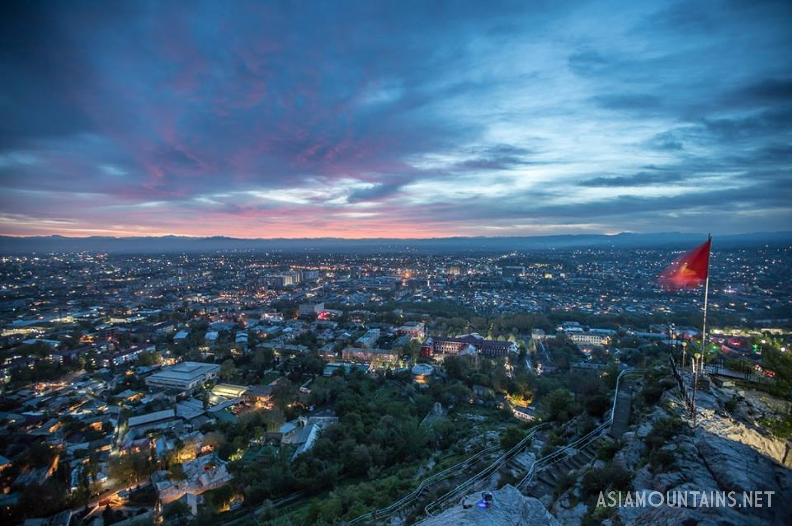
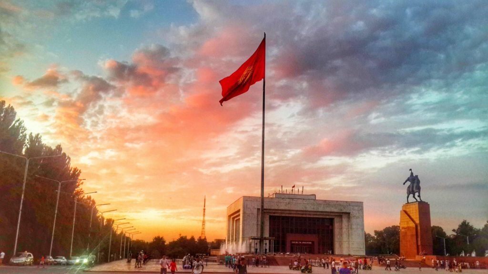
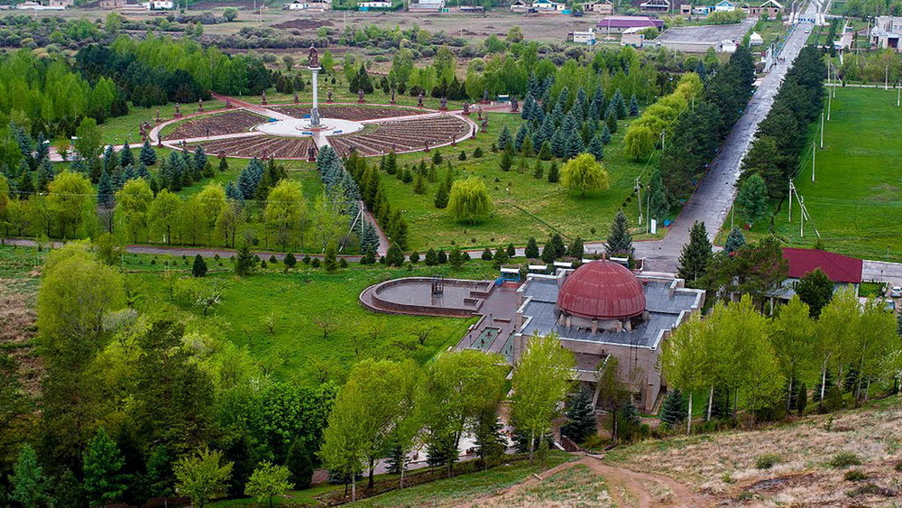
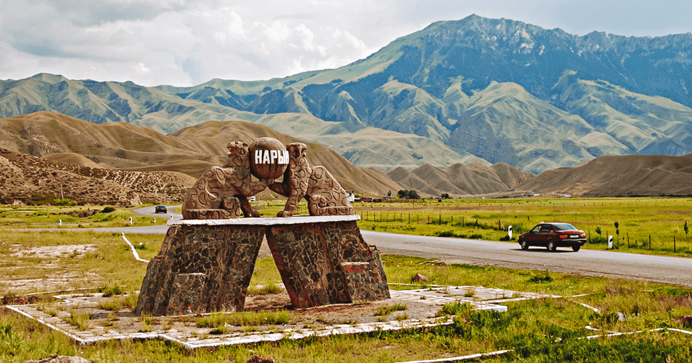
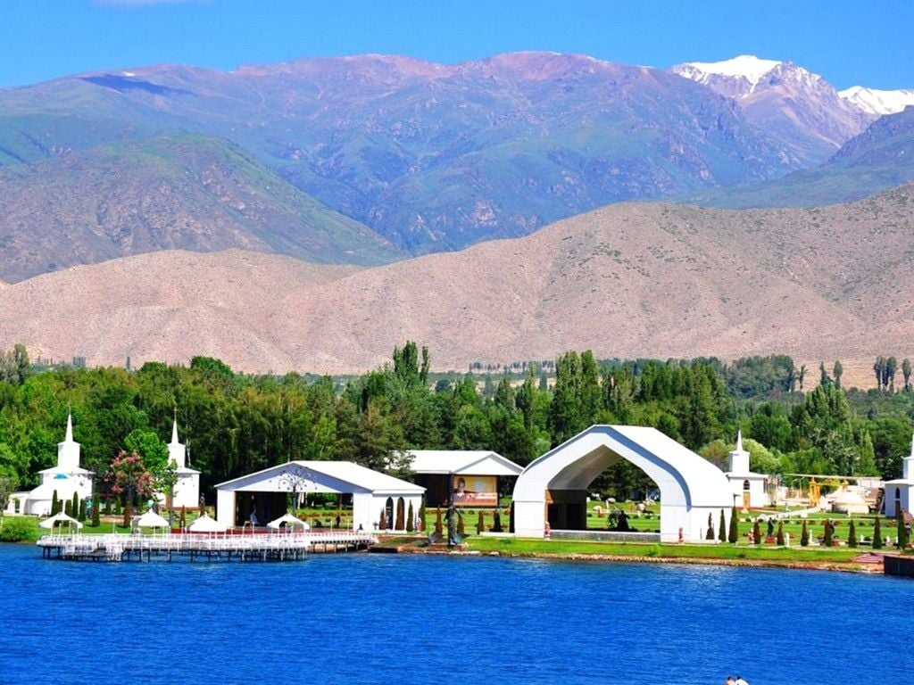
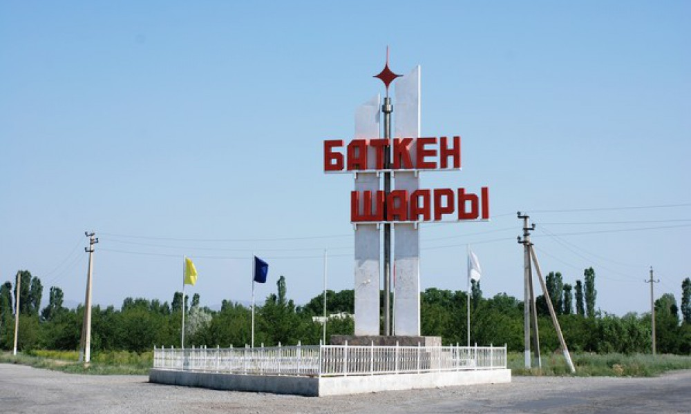

КЫРГЫЗСТАН
ОШ
- Ош облосу Кыргыз Республикасынын туштук болугундо жайгашкан.Ош облосунда 7 район жана 3 шаар,82 айыл бар

ЧУЙ
- Чуй облосу Кыргыз Республикасынын тундук болугундо жайгашкан.Ош облосунда 8 район жана 6 шаар,105 айыл бар.

ТАЛАС
- Талас облосу Кыргыз Республикасынын тундук батышында жайгашкан.Ош облосунда 4 район жана 37 айыл бар.

НАРЫН
- Нарын облосу Кыргыз Республикасынын борбордук болугундо жайгашкан.Нарын облосунда 5 район жана 1 шаар,135 айыл бар.

ЫССЫК-КОЛ
- Ыссык-Кол облосу Кыргыз Республикасынын чыгыш болугундо жайгашкан.Ыссык-Кол облосунда 5 район жана 3 шаар,171 айыл бар.

ЖАЛАЛ-АБАД
- Жалал-Абад облосу Кыргыз Республикасынын тундук батышында жайгашкан.Жалал-Абад облосунда 8 район жана 8 шаар,68 айыл бар.

БАТКЕН
- Баткен облосу Кыргыз Республикасынын туштук батышында жайгашкан.Баткен облосунда 3 район жана 6 шаар,31 айыл бар.
